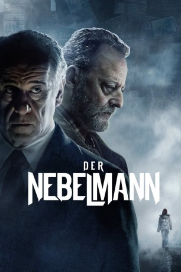

#9647 Der Nebelmann
Alternativ: La ragazza nella nebbia
 
 IMDB-Wertung: 6.8 / 10
IMDB-Wertung: 6.8 / 10  Metascore: 0
Metascore: 0 
In den nebelverhangenen Alpen Italiens lauert das Verbrechen: Wie bereits Jahrzehnte zuvor, ist in einem kleinen Bergdorf ein junges Mädchen verschwunden. Die Hoffnung der Eltern ruhen auf Sonderermittler Vogel. Doch auch mit dem seinem Auftauchen kehrt keine Ruhe ein, im Gegenteil. Denn der Star-Ermittler weiß genau, wie man die Medien bedient und Verdächtige präsentiert. Und kaum jemand in dem verschlafenen Nest ist frei von Verdachtsmomenten in einem Fall, der zu den großen europäischen Krimi-Entdeckungen der letzten Jahre gehört.
Jahr: 2017
Dauer: 128 Minuten
FSK: 12
Land: Italien Studio: Medusa DistribuzioneTonspuren:
Untertitel: Deutsch,
Auflösung: 1080p (1920x800) Größe: 3932 MB
Genre: Thriller, Krimi
Regisseur: Donato Carrisi
Drehbuch: Donato Carrisi, Donato Carrisi
Soundtrack: Vito Lo Re
Darsteller:
 Toni Servillo als Agente Vogel
Toni Servillo als Agente Vogel- Alessio Boni als Prof. Loris Martini
- Lorenzo Richelmy als Agente Borghi
- Michela Cescon als Agente Mayer
 Jean Reno als Augusto Flores
Jean Reno als Augusto Flores Greta Scacchi als Beatrice Leman
Greta Scacchi als Beatrice Leman- Jacopo Olmo Antinori als Mattia
- Galatea Ranzi als Stella Honer
- Lucrezia Guidone als Clea
- Daniela Piazza als Maria Kastner
- Thierry Toscan als Bruno Kastner
- Ekaterina Buscemi als Anna Lou Kastner
- Antonio Gerardi als Avvocato, Levi
- Marina Occhionero als Monica
- Sabrina Martina als Priscilla
- Pietro Faiella als Romeo
- Massimo Rigo als Poliziotto
- Massimo Sacilotto als Proprietario tavola calda
- Alberto Paradossi als Augusto Flores giovane
Datei: X:\2017(N-Z)\Nebelmann, Der (2017, FSK, 1920x800).mkv seit 01.10.2018
Festplatte: HD 2017(A-Z)-2018(A-F)
 Es gibt insgesamt 170 Filme in der Gruppe '2017(N-Z)'
Es gibt insgesamt 170 Filme in der Gruppe '2017(N-Z)'